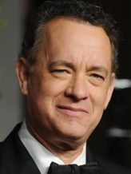

Alle Acteurs
Naam:
Morgan Freeman
Land:
ABD
Geboortejaar:
1937
Biografie:
With an authoritative voice and calm demeanor, this ever popular American actor has grown into one of the most respected figures in modern US cinema. Morgan was born on June 1, 1937 in Memphis, Tennessee, to Mayme Edna (Revere), a teacher, and Morgan Porterfield Freeman, a barber. The young Freeman attended Los Angeles City College before serving several years in the US Air Force as a mechanic between 1955 and 1959.
Kijk naar
Naam:
Christian Bale
Land:
England
Gebortejaar:
1974
Biografie:
Christian Charles Philip Bale was born in Pembrokeshire, Wales, UK on January 30, 1974, to English parents Jennifer "Jenny" (James) and David Bale. His mother was a circus performer and his father, who was born in South Africa, was a commercial pilot. The family lived in different countries throughout Bale's childhood, including England, Portugal, and the United States.
Kijk naar

Naam:
Tom Hanks
Land:
ABD
Geboortejaar:
1956
Biografie:
Thomas Jeffrey Hanks was born in Concord, California, to Janet Marylyn (Frager), a hospital worker, and Amos Mefford Hanks, an itinerant cook. His mother's family, originally surnamed "Fraga", was entirely Portuguese, while his father was of mostly English ancestry. Tom grew up in what he has called a "fractured" family.
Kijk naar